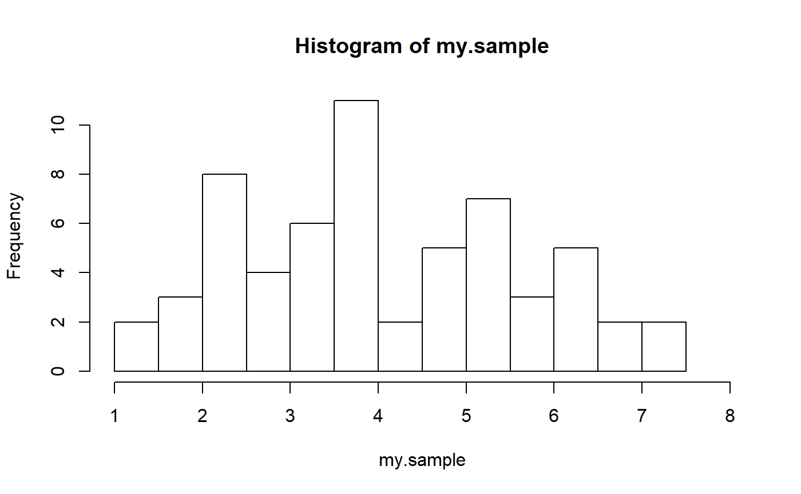

releffic.RmdAn obvious question we will have when there are multiple methods for analyzing the same set of data is, “Which method is best?” We answer that question by looking at the relative efficiency of one method compared to another method when either method could be used to obtain our desired statistics, such as a p value or a confidence interval. In this vignette we will learn about two types of efficiencies and how they can be used to select the “best” method for conducting our analysis.
We know that the power of a procedure to be able to reject a statistical null hypothesis about no treatment effect on the response variable, when indeed the treatment does have an effect on the response variable, is based on three variables: the size of the effect, the researcher’s chosen maximum Type I error rate, and the sample size. If there are at least two possible procedures for testing the same null hypothesis, then the procedure that will offer the most power after setting an effect size, a Type I error rate, and a sample size, keeping all three of these the same for both procedures, is considered the more efficient of the two procedures. We call this relative efficiency because we are referring to the efficiency of one procedure relative to another procedure.
Power is related to the Type II error rate as follows.
\(Power = 1 - P(Type\ II\ error | H_1)\)
For a specific simple alternative hypothesis, power is inversly related to our chosen Type II error rate. We also know, all else held constant, that as the allowable Type I error rate is increased, the Type II error rate decreases, so that an increase in the Type I error rate also increases power. Ideally, a researcher wants to declare both the Type I and Type II error rates. The treatment effect is unknown, but a researcher can hypothesize a specific effect. In this case, the only unknown is the sample size. This is a desirable state of affairs because sample size is the cost of doing business in social and behavioral research based on the scientific method. A researcher is able to declare a tolerance for both types of errors, provide the size of a treatment effect that might be of interest, and the calculate what sample size will be needed to achieve these goals.
In this methodological framework, it makes sense to think of efficiency as the relative sample size needed to achieve the stated goals. If two researchers declare the same tolerance for Type I and Type II errors and state that same treatment effect size of interest, then if one researcher is able to achieve these goals with a smaller sample size, this researcher is conducting a more efficient study. Rather than comparing two researchers, let’s compare two methods for testing the same null hypothesis against the same alternative hypothesis. There is no reason to alter the Type I and Type II error rates just because we are comparing methods, so these will be the same regardless of method. The method that can maintain the error rates with the hypothesized effect size and do so with the fewest number of units of analysis is the most efficent method of the two methods. That is, it has higher relative efficiency when compared to the second stated method.
Efficiency is one of several considerations when choosing among methods. Most obviously, if the two methods require two different sets of conditons for valid inference, and if the researcher can ascertain that only one set of conditions has been met, this should weigh heavily in the decision about methods. Selecting a “more efficient” method that leads to inferential statements that cannot be trusted is a bit like using “what tastes better” as a criterion for nutrition. If nutrition is a concern, we should probably rely on factors more directly associated with nutrition than personal taste preference, though we are pleased when these align nicely. Similarly, if we select methods based on our belief that we have met the conditions for valid inference, we are grateful if those happen to be the ones that are more efficient.
Unfortunately and all-too-often, the expertise of our colleagues and audience may become a concern. We may discover that a more efficient method is also a lesser-known method so that we have to explain our results, or perhaps even justify our use of the method. When the relative efficiency of the lesser-known method is associated with a very small increase in power for a similar sample size, the researcher may consider it more prudent to stay with better-known methods. Of course, I wouldn’t advise this if the conditions for valid inference are suspect for the better-known method. I also would not advise ignoring that some lesser-known methods may more closely align with the realities of our research conditions and can even provide power gains. It is common to hear that “nonparametric procedures are less powerful,” but saying it does not make it true. This misconception may lead us to reference studies of relative efficiency, but that is a small price to pay in order to match the conditions of our study with those necessary for valid inference and to potentially increase the power of our study.
When we speak of local relative efficiency (LRE), the term “local” is a reference to the specific conditions of our study. Thus, parsing the terms in this phrase, local relative efficiency is the description of the efficiency of one method when compared to another method for a specific set of circumstances.
As an example, consider a matched-pair design with randomization where both the original scores and the differences are from a normal distribution. (We would expect the difference scores to also be normally distributed if the effect of the treatment is uniformly applied across pairs so that the distribution, as a whole, shifts one way or the other along the scale.) Now let’s assume that we are interested in a treatment effect of 0.3 standard deviations. We believe this will be a positive affect that is reflected in a positive distribution shift. To make life easier, we will say that the mean difference (treatment minus control) is 0.3 and the standard deviation is 1. We will use a Type I error rate of 0.05 and a Type II error rate of 0.20, which translates to 80% power.
Here is our null hypothesis.
\(H_0: \mu = 0\)
Here is our specific alternative hypothesis.
\(H_1: \mu = 0.3\)
We can use the mean or the median here because the distribution is symmetrical. I’m going to use the mean to emphasize the alternatives that we have for performing a hypothesis test in this very common setting.
Base R has a function that we can use to determine the sample size for using the t test, so let’s use it and see what we get.
power.t.test(delta = 0.3,
sd = 1,
sig.level = 0.05,
power = 0.8,
type = "paired",
alternative = "one.sided")
#>
#> Paired t test power calculation
#>
#> n = 70.06793
#> delta = 0.3
#> sd = 1
#> sig.level = 0.05
#> power = 0.8
#> alternative = one.sided
#>
#> NOTE: n is number of *pairs*, sd is std.dev. of *differences* within pairsWe need 70 pairs. Let’s see how many pairs we would need for the sign test. Unfortunately, this is not as easy as calling an R function. We can make life easier by using large-sample approximations, so that’s what we are going to do. The fact that we need 70 pairs for the t test makes me feel good about using a large-sample approximation. Keep in mind that we began with a normal distribution, so we already know that the t test is the most powerful method that we can use in this situation. Thus, we are going to need more than 70 matched pairs for any other test we consider, including the sign test.
Here is how the power of the sign test looks for 70 matched pairs. (I’m also ignoring the correction for continuity, again to make this easier to follow.) We already know that we expect 50% of the signs to be plus signs when the null hypothesis is true. What proportion of the scores do we expect to be plus signs if we shift the mean (median) up 0.3? This leaves our null hypothesis 0.3 below the true mean, so we can do this simple calculation.
So I expect about 62% of the scores to be plus signs, rather than 50%. Let’s see if 62% is enough to give us 80% power to reject the null hypothesis of 50%. (We already know what the answer will be!)
# Here's our mean under H0
h0.prop <- 0.5
# Here's our mean under H1
h1.prop <-pnorm(-0.3, lower.tail = FALSE)
# Here's the se for pi_hat with n = 70
h0.se <- sqrt(h0.prop * (1 - h0.prop) / 70)
# Here's the critical value for rejecting H0 when n = 70
cv <- qnorm(0.95, mean = h0.prop, sd = h0.se)
# Here's the power for rejecting H0 when the mean increases by 3
pnorm(cv, mean = h1.prop, sd = h0.se, lower.tail = FALSE)
#> [1] 0.6286129We have about 63% power, so we have quite a ways to go. Let’s do this all again, but with sample sizes from 70 to 120. I’ll keep track of power so that we can look at the results.
n <- 70:120
# Here's the se for pi_hat
h0.se <- sqrt(h0.prop * (1 - h0.prop) / n)
# Here's the critical value for rejecting H0 when n = 70
cv <- qnorm(0.95, mean = h0.prop, sd = h0.se)
# Here's the power for rejecting H0 when the mean increases by 3
pow <- pnorm(cv, mean = h1.prop, sd = h0.se, lower.tail = FALSE)
# Let's put it together
cbind(n, pow)
#> n pow
#> [1,] 70 0.6286129
#> [2,] 71 0.6339092
#> [3,] 72 0.6391432
#> [4,] 73 0.6443153
#> [5,] 74 0.6494260
#> [6,] 75 0.6544756
#> [7,] 76 0.6594646
#> [8,] 77 0.6643934
#> [9,] 78 0.6692624
#> [10,] 79 0.6740721
#> [11,] 80 0.6788230
#> [12,] 81 0.6835154
#> [13,] 82 0.6881499
#> [14,] 83 0.6927269
#> [15,] 84 0.6972468
#> [16,] 85 0.7017102
#> [17,] 86 0.7061174
#> [18,] 87 0.7104690
#> [19,] 88 0.7147654
#> [20,] 89 0.7190072
#> [21,] 90 0.7231947
#> [22,] 91 0.7273284
#> [23,] 92 0.7314089
#> [24,] 93 0.7354366
#> [25,] 94 0.7394120
#> [26,] 95 0.7433356
#> [27,] 96 0.7472078
#> [28,] 97 0.7510292
#> [29,] 98 0.7548002
#> [30,] 99 0.7585213
#> [31,] 100 0.7621931
#> [32,] 101 0.7658159
#> [33,] 102 0.7693903
#> [34,] 103 0.7729167
#> [35,] 104 0.7763957
#> [36,] 105 0.7798277
#> [37,] 106 0.7832132
#> [38,] 107 0.7865527
#> [39,] 108 0.7898466
#> [40,] 109 0.7930955
#> [41,] 110 0.7962999
#> [42,] 111 0.7994601
#> [43,] 112 0.8025767
#> [44,] 113 0.8056501
#> [45,] 114 0.8086808
#> [46,] 115 0.8116693
#> [47,] 116 0.8146161
#> [48,] 117 0.8175216
#> [49,] 118 0.8203863
#> [50,] 119 0.8232106
#> [51,] 120 0.8259950We hit it at 112. So now we can calculate the LRE.
So the LRE of the sign test to the t test in this particular situation is 0.625. This means that we need only about 63% the number of subjects if we are doing the t test to get the same power as we would with the sign test. We could have done it the other way around.
The relative efficiency of the t test to the sign test is 1.6. This means that we would need 160% the number of subjects if we are doing the sign test to get the same power as we would with the t test. This is no surprise because the circumstances are ideal for the t test. The only surprise might be the magnitude of the sample size difference.
As you might have surmised, figuring local relative efficiency can take a bit of work. The work load increases if we now move on to the Wilcoxon signed ranks test, and increases further if we use exact distributions, which we should when we can. Fortunately, there are two alternative approaches that we can take, both of which involve simulation. Let’s look at an easy method first, then we will move to one that is a bit more sophisticated, but a bit more accurate, and still simpler than actually calculating power for a variety of methods.
For these methods, we will ignore the actual efficiency statistic, but instead ask the question, “Which method is most powerful in this situation?” Let’s take this approach to compare the t test to the Wilcoxon signed ranks test in the current setting. First, I’m going to draw a random sample of scores from a normal distribution with the mean of 0.3 and a standard deviation of 1. Notice that this is the distribution under the specific alternative hypothesis that we posed above. I’m going to use the sample size of 70 that we calculated as necessary for the t test to obtain 80% power, but we’ll fiddle with this in a moment.
Now let’s calculate both the t test and the Wilcoxon signed ranks test. For this sample size, it doesn’t much matter if we use the exact test for the Wilcoxon or a large-sample approximation. I’m going to see if the exact test works because I like using the exact test when it is available.
t.test(my.sample, alternative = "greater")
#>
#> One Sample t-test
#>
#> data: my.sample
#> t = 3.5323, df = 69, p-value = 0.0003698
#> alternative hypothesis: true mean is greater than 0
#> 95 percent confidence interval:
#> 0.2213128 Inf
#> sample estimates:
#> mean of x
#> 0.4191563
wilcox.test(my.sample, alternative = "greater", exact = TRUE, conf.int = TRUE)
#>
#> Wilcoxon signed rank test
#>
#> data: my.sample
#> V = 1794, p-value = 0.0005189
#> alternative hypothesis: true location is greater than 0
#> 95 percent confidence interval:
#> 0.212287 Inf
#> sample estimates:
#> (pseudo)median
#> 0.4251389Remember, results will vary. The first time I ran this, I obtained a smaller p value and a narrower interval for the Wilcoxon test than I did for the t test, yet I know that the t test has more power in this situation. What happened? Remember that power is a probability calculation, so we are talking about “in the long run.” That is where our second approach to this problem comes into play. One random sample is a good “first guess” that will give us the right answer the majority of the time, but we would like a bit more confidence that we are choosing the best method. One trial will not tell us what we need to know. I’m going to do this again, but I’m going to repeat it 30 times. Each time I’m going to track the p-value from each procedure.
# I'm going to initialize some arrays
t.pvalue <- 1:30
w.pvalue <- 1:30
winner <- 1:30
for (i in 1:30) {
my.sample <- rnorm(70, mean = 0.3, sd = 1)
t.result <- t.test(my.sample, alternative = "greater")
w.result <- wilcox.test(my.sample, alternative = "greater", exact = TRUE)
t.pvalue[i] <- t.result$p.value
w.pvalue[i] <- w.result$p.value
if (t.pvalue[i] < w.pvalue[i]) {
winner[i] = "t"
} else {
winner[i] = "w"
}
}
cbind(t.pvalue, w.pvalue, winner)
#> t.pvalue w.pvalue winner
#> [1,] "0.00853227483915354" "0.0191517992013956" "t"
#> [2,] "0.0197198870136989" "0.0194325855734909" "w"
#> [3,] "0.0168607833379697" "0.0188744237418072" "t"
#> [4,] "0.00511362842566046" "0.00334628104960705" "w"
#> [5,] "0.025284876223406" "0.0338342727170564" "t"
#> [6,] "0.049939306891996" "0.0507651896197468" "t"
#> [7,] "0.00790477525570549" "0.00678213854078893" "w"
#> [8,] "0.00462372214095041" "0.00431445418865169" "w"
#> [9,] "0.0609249706296352" "0.0945695147905843" "t"
#> [10,] "0.000326126286101127" "0.000221654492082654" "w"
#> [11,] "0.0217277845107254" "0.0258138236383988" "t"
#> [12,] "0.0402602915211625" "0.0421456314746973" "t"
#> [13,] "0.0588862967967705" "0.0338342727170564" "w"
#> [14,] "0.135301114095049" "0.259137716946601" "t"
#> [15,] "0.00207889936882037" "0.000768041923165584" "w"
#> [16,] "0.00360189380368574" "0.00455149087628424" "t"
#> [17,] "0.303809111378889" "0.346225153605735" "t"
#> [18,] "0.000486695300127795" "0.000929616087286207" "t"
#> [19,] "0.0155953568038657" "0.00884838401696854" "w"
#> [20,] "0.00622825233968556" "0.0105665475831493" "t"
#> [21,] "0.00609658997295239" "0.00366734338069509" "w"
#> [22,] "0.00123255558416112" "0.00161552705474801" "t"
#> [23,] "0.00553610048288699" "0.005332777400599" "w"
#> [24,] "0.0631928017386074" "0.0887619157864561" "t"
#> [25,] "0.00748591247607976" "0.00701497327526227" "w"
#> [26,] "0.127885877275738" "0.0565671209414041" "w"
#> [27,] "0.0419583650418337" "0.0520122956985857" "t"
#> [28,] "0.0667293353465833" "0.0887619157864561" "t"
#> [29,] "0.233858382520765" "0.270589974074678" "t"
#> [30,] "0.00251254563153307" "0.00192955823915397" "w"I kept track of which test resulted in the lowest p value each time. Let’s see how many time the t test was the winner. Again, remember that your results will very likely be different.
We are going to get various outcomes every time we try this. If you run it a number of times, one thing should become clear: the Wilcoxon test is not a bad option! It sure seems to be doing much better than what we had expected from the sign test.
Randomness and probability are still at work. Probability expectations are based on the long run, so I’m going to simulate 10,000 samples. I don’t want to print those all out, so I’ll just show the final result at the end.
# I'm going to initialize some arrays
t.pvalue <- 1:10000
w.pvalue <- 1:10000
winner <- 1:10000
for (i in 1:10000) {
my.sample <- rnorm(70, mean = 0.3, sd = 1)
t.result <- t.test(my.sample, alternative = "greater")
w.result <- wilcox.test(my.sample, alternative = "greater", exact = TRUE)
t.pvalue[i] <- t.result$p.value
w.pvalue[i] <- w.result$p.value
if (t.pvalue[i] < w.pvalue[i]) {
winner[i] = "t"
} else {
winner[i] = "w"
}
}
sum(winner == "t")/10000
#> [1] 0.6341The t test won more than half of the time, but again, the Wilcoxon doesn’t lose as much as we might have expected considering that we are replacing observed quantities with the ranks of those quantities. Let’s try this one more time with a smaller effect size.
for (i in 1:10000) {
my.sample <- rnorm(70, mean = 0.2, sd = 1)
t.result <- t.test(my.sample, alternative = "greater")
w.result <- wilcox.test(my.sample, alternative = "greater", exact = TRUE)
t.pvalue[i] <- t.result$p.value
w.pvalue[i] <- w.result$p.value
if (t.pvalue[i] < w.pvalue[i]) {
winner[i] = "t"
} else {
winner[i] = "w"
}
}
sum(winner == "t")/10000
#> [1] 0.5889Your results may vary, but I don’t expect the t test to win as often in this example as it did in the previous example. I’ll explain why in the next section.
By now you have likely perceived the difficulties with calculating the LRE. Knowing that we have to do this for each research situation we encounter may make us a bit squeamish. Fortunately, there is a way out.
Recall that we defined relative efficiency like this.
\(\epsilon_{A,B} = \frac{N_B}{N_A}\)
When we are calculating power, what happens to the sample size as we decrease the size of the effect that is of interest to us, all else being constant? It increases. To detect smaller effects we need larger sample sizes. So what would happen if we were interested in a very small effect size? We would need a very large sample size. What if we were interested in an even smaller effect size? We would need an even larger sample size. We could keep going like this. If we do, something strange and wonderful occurs. The ratio of the sample sizes for our two methods approach a constant value. Mathematicians would write it like this.
\(ES \rightarrow 0\) \(N \rightarrow \infty\) \(\epsilon_{A,B} \rightarrow L\)
That is, the relative efficiency approaches a constant value, which I refer to above as “L.” (Mathematicians call this a “limit.”) This value is what we know as asymptotic relative efficiency or ARE. What good does ARE do us? Importantly we (or at least mathematical statisticians) can calculate the ARE for various mathematical distributions that serve as models for our actual data distributions. Examples of such models are the uniform distributions, the logistic distributions, the Laplace distributions, and, of course, the normal distributions. We don’t ever expect our data to adhere exactly to the form of these distributions, but if our data and the distributions share similar properties, such as how much of a peak is in the center and what proportion of the values are in the tails, the model becomes a reasonable representation for what we encounter in practice.
The ARE will tell us the relative efficiency of one method as compared to a competing method when our data can be reasonably modeled by a mathematical distribution and when the effect size is small. The obvious advantage here is that we have a single number in hand that is not dependent on our particular research situation. Thus, all the steps we took above to estimate the LRE are unnecessary. There are two disadvantages to consider. First, we may not be interested in effect sizes that are very small, but ARE is calculated as a limit when the effect size moves toward zero. Fortunately, some research has been done to determine if ARE is a good approximation even when the effect sizes are moderate or large, and so far the results are promising. The ARE appears to be a good proxy for LRE! (I am conducting more work in this area, so stay tuned for future updates.)
The second disadvantage is that our data may not be represented very well by a mathematical model. Even so, all is not lost. There are certain properties of the mathematical models that seem to be most responsible for the ARE, so rather than focusing on the distinct shape of the model, we can focus on these properties. The two that are of most interest are the height of the peak of the distribution and the weight of the tails. These are actually related to each other. Distributions with high peaks tend to also have “heavier” tails, though that is not always the case. By heavier tails, we mean that a higher proportion of the distribution is in the tails when compared to other distributions.
Talking about peak and tails is a relative concept, so it is valuable to have a standard distribution that we can use for comparison. It should come as no surprise that we use the normal distribution as the standard. When the tails of a distribution are lighter than those of the normal distribution (an example of this would be the uniform distribution), we refer to the distribution as platykurtic. When the tails of the distribution are heavier than those of a normal distribution, we refer to this as leptokurtic. There are varying degrees of platykurtic and leptokurtic, but in every case we are using the normal distribution as a reference distribution.
What we notice about the ARE is that it is most sensitive to the weight of the distribution tails. The good news here is that even if a mathematical model is not a good fit for our data, knowing (or guessing at) the weight of the tails of our data, as compared to a normal distribution, can give us a clue as to the choice of a more powerful method. All we need is a good chart of asymptotic relative efficiencies, and such charts are readily available.
As an example of this concept, suppose I am using a measure that I believe will have a higher proportion of responses in the tails of the distribution than I would expect with the normal distribution. Looking at a chart of AREs informs me that I can increase the power of my study by using ranks as replacement scores. That is, I will choose the Wilcoxon test to achieve a power gain over the t test. Similarly, if I have a very high peak in my data (i.e., a very
high proportion of responses are clustered in the middle, yet we still have a number of responses at the ends of our scale), the ARE table tells me that I may be able to use half as many units in the study with the sign test than if I had used the t test! Startling, yes? It is somewhat surprising, but only because we may have been misled to think that the t test is always the most powerful approach to analyzing our data.
What if we are dealing with data that looks nothing like any of the mathematical models? In this case, we can resort to a simulation, as we did when looking at LRE. For example, consider obtaining data on a scale that represents opinion on a polarizing issue. That is, more respondents will lean toward one end or the other on the scale than what we will find in the middle. This scale results in bimodal data. How can I model such a situation? I know how easy it is to obtain random normal deviates, so what if I use two normal distributions?
Let’s suppose that our scale ranges from 0 to 8. Let’s put the peak of one of the two distributions at 3 and the peak of the other one of the two distributions at 5. I know that most of the normal distribution (99.7% of it, to be more precise) is within three standard deviations of the mean, so we can use a standard deviation of 1 to keep most values within the range of our scale. (Yes, an occasional data point may drift outside, but remember that the purpose of this simulation is to find out what analytic method we want to use, so it is only important that we simulate the main features of our distribution. We don’t need to have an exact imitation of reality.)
Here’s our random sample from this model, as well as a histogram so that we can see how this is “shaping” up. I’m using a sample size of 60, but this choice is arbitrary. I just want it to be a large enough sample to have some stability in our simulation.
lower.norm <- rnorm(30, mean = 3, sd = 1)
upper.norm <- rnorm(30, mean = 5, sd = 1)
my.sample <- c(lower.norm, upper.norm)
hist(my.sample, breaks = 15, xlim = c(1, 8))
Pictures will vary because we are using a random sample. If you try this a few times, sometimes you’ll see a clear bimodal distribution and sometimes it may even look normal. That’s due to sampling variability. Obviously, we know that the population distribution is not normal, but is bimodal.
Now let’s do this 10,000 times, as we did for LRE, and compare the t test and the Wilcoxon test. Suppose that we consider the midpoint of this scale (4) as a neutral position. Further suppose that we have an alternative hypothesis that this particular population is to the right of neutral (i.e. a higher mean than 4). I can simulate this by putting a few more people on the right side of the distribution, so I will do so. I’m also going to shift the distribution to the left by 4 points so that we can use a null hypothesis of 0, thus avoiding any complication with the Wilcoxon test.
for (i in 1:10000) {
my.sample <- c(rnorm(25, mean = -1, sd = 1), rnorm(35, mean = 1, sd = 1))
t.result <- t.test(my.sample, alternative = "greater")
w.result <- wilcox.test(my.sample, alternative = "greater", exact = TRUE)
t.pvalue[i] <- t.result$p.value
w.pvalue[i] <- w.result$p.value
if (t.pvalue[i] < w.pvalue[i]) {
winner[i] = "t"
} else {
winner[i] = "w"
}
}
sum(winner == "t")/10000
#> [1] 0.4517We have a winner! Unless you obtained a peculiar outcome, which is possible, but not probable, it isn’t the t test. If this was my research study, I would analyze the data with the Wilcoxon. The confidence interval for the median is my preferred statistic here, but I know that with these kind of data, most of the time my interval will be narrower if I use the Wilcoxon test rather than the t test.
lower.norm <- rnorm(25, mean = 3, sd = 1)
upper.norm <- rnorm(35, mean = 5, sd = 1)
my.sample <- c(lower.norm, upper.norm)
wilcox.test(my.sample, alternative = "greater", conf.int = TRUE)
#>
#> Wilcoxon signed rank test with continuity correction
#>
#> data: my.sample
#> V = 1830, p-value = 8.357e-12
#> alternative hypothesis: true location is greater than 0
#> 95 percent confidence interval:
#> 3.802956 Inf
#> sample estimates:
#> (pseudo)median
#> 4.116389The p value is meaningless here because it is for a test of a median of 0, which is ridiculous since that’s the edge of our scale. We could shift the distribution if we really want a p value, but I don’t need to. I want the confidence interval.
One final word about ARE. Mathematicians have also calculated the lower limit of ARE for one procedure when compared to another. This tells us that no matter what the distribution, this is the lowest possible ARE. For example, the ARE for the Wilcoxon test when compared to the t test has a lower limit of 0.86. This means that if you can find the worst-case scenario for the Wilcoxon, the sample size for the t test can be 86% the sample size for the Wilcoxon to achieve the same power. That may seem like a big difference, but remember, this is the worst-case scenario. Also remember that you can only count on the t test to maintain the Type I error rate when the distribution is normal. For the Wilcoxon test, it only needs to be symmetrical (and even that restriction can be relaxed if you change the hypothesis to one of a stochastic increase, or decrease).
Here’s a startling fact: the ARE for the Wilcoxon to the t test when the data are normally distributed is 0.96. That means, if you have a sample size of 50 and use the Wilcoxon for inference, you “only” need a sample size of 48 with the t test. That’s not much difference, and yet we we are assuming a normal distribution where the t test has home-field advantage! By contrast, if the distribution is a Laplace distribution (very high peak and heavier than normal tails), the ARE for the Wilcoxon is 1.5. That means if the sample size of the Wilcoxon is 50, you need 75 units with the t test to achieve the same power. Wow! Ranks rule! And don’t get me started on talking about how often our measures are such that we can be more confident in ranking than in creating a one-to-one correspondence of interval data with the scale of an underlying construct.